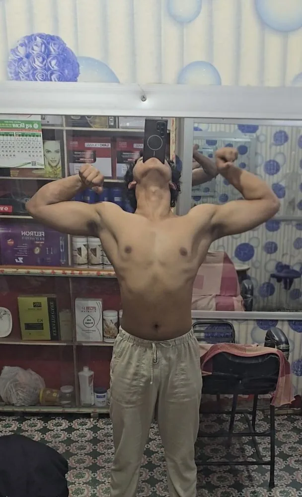

You want clear decisions inside a routine you can maintain.
- You eat normal home food and want better structure.
- You train at home, in a gym, or move between both.
- You will follow, log, and adjust from real trends.
Personal food + training / 001
Your normal Nepali meals, schedule, and home or gym access become one food and training file. Delivered on WhatsApp. Yours to keep.
Start on WhatsAppYour details decide what goes inside.

01 / What this is
Food, training, and the rules for changing both sit in the same file.
What you eat. When you can train. What equipment you have. What you can repeat. Those inputs shape the food, training, and checkpoints inside the file.
02 / Who it fits
03 / Inside the files
Pages from the home, gym, and food files I built and use. Select one and inspect the page.
Home file / 6 pages
Bodyweight, backpack, bags, bricks, and basic equipment organized across morning and evening.
Gym file / 11 pages
Push, pull, legs, and upper days with execution, rest, effort, substitutions, and progression written in.
Food file / 3 pages
Rice, dal, sabji, eggs, chana, chicken, curd, and fruit organized by quantity and purpose.


Meals from my own routine
Food / Real life first
Dal-bhat, sabji, eggs, chana, chicken, curd, fruit, rice, and familiar home meals can remain. The structure decides portions, protein anchors, meal rhythm, and what changes when the trend changes.
Change portions and rhythm before changing the food.
Home and gym versions both define the week, rep ranges, effort, recovery, and progression.
Working sets, 7-day bodyweight average, weekly waist, sleep, energy, and joint comfort.
04 / How it works
Your goal, age, height, weight, normal food day, schedule, and training access.
I write food, training, progression, and checkpoints to work together.
It arrives on WhatsApp for you to keep and return to.
05 / Personal archive
They organized my home training, gym work, normal food, progression, and recovery into something I could actually follow.
The archive below follows that process from home training, through my leanest recorded phase, into my current gym work.
Nikhil Upreti / Birtamode, Jhapa


06 / Start with what is real
Goal, age, height, weight, normal food day, schedule, and home or gym access.